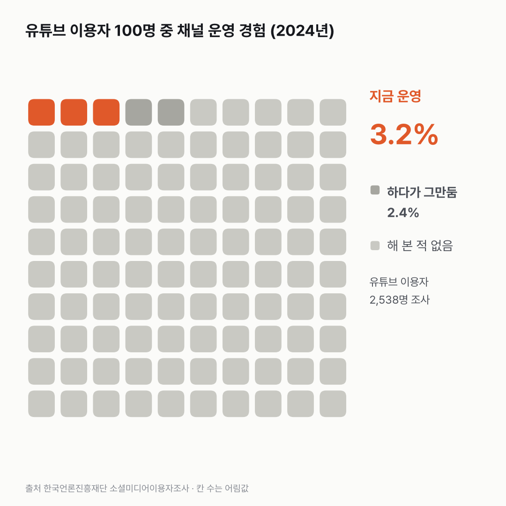

유튜브 보는 100명 중 채널 주인은 3명이에요
유튜브를 보는 사람은 많아도 지금 만드는 사람은 드물어요. 해 봤다가 내려놓은 사람까지 합쳐도 5.6%예요.

- 유튜브 보는 사람 중 지금 자기 채널을 하는 사람은 3.2%예요.
- 하다가 그만둔 사람은 2.4%예요.
- 20대는 지금 하는 사람(2.8%)보다 그만둔 사람(5.2%)이 더 많아요.
유튜브 앱을 열면 영상이 끝없이 이어져요. 올리는 사람도 그만큼 많아 보이죠. 19세 이상 전체로 세면 지금 개인 채널을 운영한다는 사람은 2.7% 정도예요. 유튜브를 보는 사람만 놓고 세면 3.2%로 조금 올라가요.
해 봤다가 그만둔 사람은 보는 사람 100명 중 2명이에요(2.4%). 한 번이라도 해 본 사람을 합치면 5.6%예요.
나이대별 표에서 20대 칸을 보고 좀 멈칫했어요. 그만둔 사람이 5.2%로, 지금 하는 사람 2.8%보다 많았어요. 60대는 그만둔 사람이 0.3%뿐이에요.

지금 하는 비율만 놓고 보면 나이대끼리 큰 차이는 없어요. 2.8%에서 4.3% 사이예요. 표본 오차를 생각하면 나이대끼리 순위를 매기기는 어려워요.
20대는 왜 다른 나이대보다 많이 내려놓았을까요. 이 조사엔 그만둔 이유를 묻는 칸이 없었어요.
이 숫자는 어디서 왔나요
출처
| 데이터 | 출처 | 쓰임 |
|---|---|---|
| 온라인동영상플랫폼 개인 채널 운영 여부 (KOSIS DT_413003_2024_097~103, 플랫폼 7개) | 한국언론진흥재단 「소셜미디어이용자조사」 | 플랫폼 이용자 중 지금 운영·예전에 운영·운영한 적 없음, 성별·나이대 |
| 온라인동영상플랫폼 이용 여부_유튜브 (KOSIS DT_413003_2024_090) | 같은 조사 | 유튜브 이용률(교차 확인) |
- 만 19세 이상 3,000명 가구 방문 면접 조사(2024년 10~11월).
- 분모는 그 플랫폼을 지금 이용하는 사람이다. 유튜브 2,538명, 네이버TV 326명, 아프리카TV 136명. 카카오TV(94명)·위버스(39명)·치지직(32명)·트위치(11명)는 100명 미만이라 해석하지 않았다.
- 검증: 표마다 세 선택지 합이 100%인지 확인했다.
- 교차 확인: 유튜브 이용률 84.9%는 보도와 같다. 채널 운영 비율은 보도에서 찾지 못했다.
- 수집일: 2026-10-29 (KOSIS 오픈API).
기준일
2024년 10월 28일 ~ 11월 29일 조사, 한 번뿐이라 추세는 없다.
한계 5가지
이 데이터로 말할 수 없는 것
- '운영'의 기준은 응답자 판단이다. 구독자 수, 영상 수, 수익은 이 조사에 없다. 업로드 몇 번 한 채널도 '운영'으로 답했을 수 있다.
- 값이 3% 안팎으로 작아 표본 오차가 크다. 유튜브 나이대별 사례수는 400~565명이다. 1%p 안팎 차이는 같은 수준으로 봐야 한다.
- 한 해(2024년)뿐이다. 늘었는지 줄었는지 알 수 없다.
- 19세 미만은 조사 대상이 아니다.
- 채널 운영이나 수익 활동을 권하는 글이 아니다. 그만둔 이유도 모른다.
전제 기록
데이터를 보기 전에 적어둔 것, 그리고 보고 나서 바꾼 것
- 전제 기록(premises)(데이터를 받기 전에 작성)를 따랐다. 받기 전에 '사례수 100명 미만은 해석하지 않음'을 정해 두었고, 플랫폼 7개 중 3개만 해석했다.
질문
유튜브를 보는 사람 100명을 한 방에 모아 본다고 해 볼게요. 그중 지금 자기 채널을 하는 사람은 몇 명일까요? 한국언론진흥재단의 2024년 소셜미디어이용자조사를 열어 봤어요.
새 글 나오면 받아 보기
지금은 RSS로 받을 수 있어요. 메일은 아직 준비 중이에요.
RSS 주소메일 (준비 중)